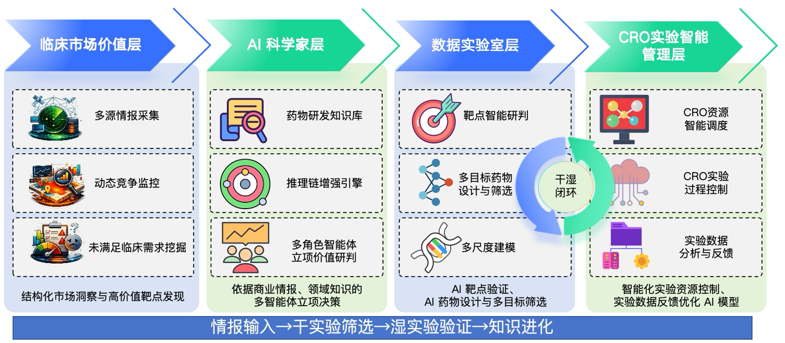

基于多智能体协同的全链路药物研发平台，融合前沿AI技术与肿瘤免疫学，聚焦临床未满足需求，加速从靶点发现到候选分子的全流程。
四大智能层协同驱动，构建全链路智能化药物研发体系
通过智能信息引擎，聚合商业信息平台、社媒平台、会议平台等信息，每天推荐最新的极具潜力的靶点和药物，实时汇聚全球临床需求与竞争管线动态。
内嵌药物研发知识图谱与决策逻辑链，模拟顶尖科学家思维，对靶点生物学合理性、差异化路径、风险矩阵进行深度推演与优先级决策。
集成生成式分子设计、靶点-配体相互作用模拟、ADMET预测等AI模型，通过多目标强化学习实现亲和力、稳定性等多维度优化。
自主规划湿实验方案、智能调度外部CRO资源，将关键验证数据精准反哺数字实验室，形成干湿闭环迭代。

聚焦肿瘤等高价值领域，AI驱动多管线并行推进
四个AI设计候选分子均对肿瘤表现明确药效，剂量窗口优于同类产品，动物实验结果良好。
临床前研究AI生成超过40条IL2单体，可表达性成功率超40%，受体结合率超80%，30+条符合进一步开发标准。
序列优化技术平台可快速迁移至抗体VHH、VL、VH设计与优化，具有广阔的产业转化潜力。
平台验证基于智能信息引擎，挖掘成熟靶点的新组合方案，结合高通量实验验证，突破"热门靶点内卷"困局。
靶点筛选肿瘤是免疫治疗的下一个突破口，也是最大的未满足临床需求
肿瘤缺乏免疫细胞浸润，对当前主流PD-1/PD-L1免疫检查点抑制剂应答率极低，是临床最大的未满足需求之一。超过70%的实体瘤属于"肿瘤"表型。
我们的AI平台通过PD1-IL2融合蛋白策略，既阻断免疫逃逸又激活免疫细胞，将"肿瘤"转化为"热肿瘤"。多目标优化确保药效与安全性的最佳平衡。
PD1-IL2融合蛋白赛道具备千亿规模市场潜力，是肿瘤免疫治疗下一阶段突破的关键方向。先发布局肿瘤领域，可建立显著的竞争壁垒与差异化优势。
平台采用模块化设计：临床信息层负责市场与靶点信息收集；AI立项层进行智能决策；数字实验室层进行序列设计与优化，通过多目标强化学习实现亲和力、稳定性等多维度优化；实验管理层实现干湿闭环反馈，持续提升预测准确性。
传统药物研发采用试错法，周期长成本高。我们的AI平台通过多目标优化，实现可表达性超过40%，受体结合命中率接近100%。平台具备数据冷启动能力，可在文献数据不足时自主生成训练数据。跨文献/机制/靶点的多层次建模支撑多路径探索，显著缩短研发周期，降低研发成本。
肿瘤是指免疫细胞浸润较少的肿瘤微环境，导致患者对免疫检查点抑制剂等免疫疗法响应不佳。超过70%的实体瘤属于肿瘤表型，是当前肿瘤免疫治疗最大的未满足需求。我们通过PD1-IL2融合蛋白策略，将肿瘤"加热"为免疫应答活跃的热肿瘤，突破治疗瓶颈。
项目聚焦PD1-IL2融合蛋白等肿瘤免疫药物，具备千亿规模市场潜力。平台技术高度可拓展，可快速迁移至抗体VHH、VL、VH设计与优化等领域。目前已获得4个不同活性IL2候选蛋白，初步具备PCC分子潜力，动物实验结果良好。平台的产业转化潜力显著，有望在肿瘤免疫治疗领域实现突破。
PD1-IL2融合蛋白是一种创新的肿瘤免疫治疗药物，将PD1抗体与IL2细胞因子融合，既能阻断肿瘤免疫逃逸，又能激活免疫细胞。IL2作为连接抗体与多肽的关键细胞因子，其研究将推动多种免疫治疗模式的发展。